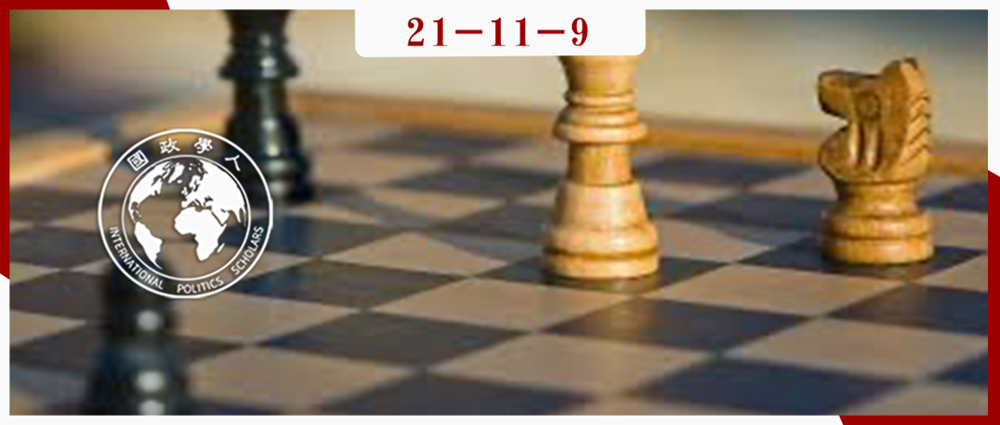

收录于合集 #《国际关系前沿》2021年第11期 18个

作品简介 ****
作者： Paul A. Kowert是麻省大学波士顿分校政治学副教授，他的研究兴趣是领导者使用信息和建议的不同方式、领导者将规范性原则纳入政策选择的方式、人们对其他国家看法形成的方式。Margaret G. Hermann是麦克斯韦学院全球事务教授以及Daniel Patrick Moynihan 全球事务研究所所长。她的研究兴趣是政治领导、外交政策决策、危机管理、非国家行为对外交政策的影响以及比较外交政策。
编译： 王芷汀 （国政学人编译员 约翰霍普金斯大学保罗尼采高级国际关系研究院）
来源： Kowert, Paul A., and Margaret G. Hermann. “Who Takes Risks? Daring and Caution in Foreign Policy Making.” The Journal of Conflict Resolution , vol. 41, no. 5, Sage Publications, Inc., 1997, pp. 611–37
归档： 《国际关系前沿》2021年第11期，总第38期。

内容摘要 ****
国家领导人经常面临具有风险性的决定。尽管领导人对风险的容忍度可能存在很大差异，但外交政策研究者仍对这些差异缺乏令人信服的解释。解决这个问题的为数不多的尝试之一认为，决策者接受风险以避免损失（losses），但拒绝冒险而获得可比的收益（gains）。这种趋势在前景理论中得到体现，实验结果是稳健的，但始终无法预测三分之一或更多受试者的行为。为了调查个体差异对风险承担的贡献，本文对 126 名受试者进行了三份评估风险倾向的问卷和两项个性问卷。结果确定了广义冒险行为的强个性预测因素。与前景理论相反，有些人特别愿意冒险以获得收益，而另一些人则在面临潜在损失时特别不太可能冒险。本文的统计分析支持风险承担的三阶段模型。研究结果表明，研究国际冲突的研究者如果想要了解冒险行为，那么他们不仅必须考虑领导者如何框定（frame）冲突，还必须考虑领导者本身的性格。
文章导读
由于国家领导人无法事先知道他们决策的所有后果，所有政治决断都被风险（risk）所影响。领导人对风险的容忍度可能大不相同，这往往会带来重要的政治后果。所有领导者都面临不确定性，随之而来的是错误和失败的前景。当风险很高时，例如在国际危机期间，领导者对风险的判断就变得至关重要。一些领导者对于危机处理中“算计”（calculating）有所保留，而另一些领导者则肯定其效用：后者中，有些人不计后果地做出反应，另一些人则变得越来越谨慎。本文认为，更直接地关注领导者本身将获益更多。
这项研究试图解明个人和外界情势对冒险行为的影响。本文首先关注个体差异如何影响人们应对风险的方式，其次探究个性和问题框架之间的关系。这些分析使本文提出并验证在风险条件下进行决策的通用模型。最后，本文简要讨论了这些发现对外交政策决策和国际谈判研究的影响。
01
谁更愿意冒险？
本研究使用两种不同的工具来评估个体差异。NEO个性问卷修订本（NEO PI-R），用于衡量五个主要因素以及30个子量表（每个因素的六个不同方面）。本文还使用了另一种人格工具，即迈尔斯-布里格斯性格分类法 （Myers- Briggs Type Indicator，MBTI），该工具已广泛用于业界以评估学习风格、职业选择和组织结构。为了调查性格和冒险行为之间的关系，本研究使用了两种工具来衡量风险倾向。第一种是选择困境问卷 （Choice，Dilemmas Questionnaire, CDQ）的修改版，其中更新了几个问题的内容并使问卷更加性别平衡。第二种工具是个人风险清单（Personal Risk Inventory, PRI），用于调查公司环境中的风险承担。所有四种工具都用于参加政治学入门课程的126名本科生（50名男性和76名女性）。
与先行研究相比，本研究发现了更有力的证据，证明个性与冒险之间存在普遍关系。数据表明，具有开放性（openess）、寻求刺激（excitement seeking）和直觉行为（intuitive behavior）特征的人会积极寻求冒险经历。具有不太尽责（conscientiou）、对威胁不太敏感，也不太倾向于判断外界情况（less inclined to judge situations）特征的人由于冲动且倾向于忽视风险而承担风险。有第三组，由更友善（agreeable）和利他（altruistic）的人组成，确实关注风险，并在可能的情况下尽量避免风险。考虑到这些区别——忽视风险的人、接受风险的人和拒绝风险的人——我们现在开始讨论人格、前景理论和冒险之间的关系。
02
人格与前景理论
与人格与一般风险承担之间的关系不同，前景理论描述的人格与框架效应之间的关系在很大程度上被忽视了。为了衡量前景理论预测的框架效应，我们要求受试者回答包含一系列决策问题的问卷。三种不同类型的问题被用来研究框架效应：经济赌博、医疗赌博和政治赌博（Economic，medical, political gambles）。第一类问题涉及金钱问题，后两类问题都涉及人命攸关的场景。本研究发现，当问题提供潜在的收益时（相反于前景理论），更开放（open）和直觉（intuitive）的受试者愿意承担风险。在面临损失时，更友善（agreeable）或利他（altruistic）的受试者会避免风险。
为了更好地理解风险、框架和个性之间的关系，我们将受试者分为两类：一类是选择风险替代方案的受试者，另一类针对各种问题类型和框架有特定选择的受试者。无论框架如何，焦虑和尽责性选项都与风险承担负相关。无论框架如何，女性受试者同样选择避免风险。另一方面，更开放和直觉的受试者表现出对风险的偏好。这再次证明这种偏好在增益框架下比在损失框架下强得多。最后，更令人愉快和感觉更好的人会避免风险，尤其是在面临被称为损失的情况时。
基于这些发现，本文得出结论，人们至少以四种方式应对风险。一些人对问题框架的反应正如前景理论所预测的那样：当他们有所得时，宁可稳当赌注，也不愿承担风险和接受损失。其他人似乎既具有风险性又具有框架不变性。还有一些人对风险的反应不同，这不是根据前景理论的预测而是取决于问题是如何框定的。特别是当他们会有所收获时，开放和直觉的刺激寻求者愿意承担风险（在另一种情况下，这些人可能被视为赌徒）。而尤其在面临损失时（并且可能因为风险而对某人造成更大的伤害），更友善和利他的人更愿意避免风险。
03
风险承担的三阶段模型
为了考虑到这些个体差异，本文提出了风险条件下的三阶段决策模型。
PRI Total=α-β1GEN-β2AWA-β3AGR-β4ANX+β5THR+β6INT
其中冒险 （PRI Total） 是性别 （GEN）、意识 （AWA）、宜人性 （AGR）、焦虑 （ANX）、寻求刺激（THR）和MBTI直觉（INT）的函数。
然而，由于本文数据的结构，该模型不包括框架效应。不幸的是，本研究中使用的框架问卷没有包含足够的项目来进行涉及框架的回归分析。然而，我们可以通过方差分析（Analysis of Variance, ANOVA）来测试个性和框架之间的相互作用。为此，我们对每个FFM因素和子量表以及每个MBTI子量表进行了单独的方差分析，测试了以下假设，即那些行为更符合前景理论预测的人（LR +GC得分大于平均值）将与违反前景理论预测的分数不同（LR + GC分数小于平均值）。正如本文之前发现的那样，判断力低的受试者更有可能忽视风险，而这种特质的测量值高的受试者更有可能关注风险，谨慎和深思熟虑地处理风险任务，并更加关注问题框架。根据本文模型，开放性和利他主义也应该与框架相互作用，但仅在某些框架下（增益框架应加强开放主体对风险的偏好；损失框架应增加利他主体避免风险的倾向）。
为了确定后一种期望是否确实如此，本文对每一个框架进行了额外的方差分析，根据在损失框架下做出的风险选择的百分比或在增益框架下做出的某些选择的百分比来测试个性特征的差异。正如预期的那样，利他主义和开放性再次与问题框架相互作用。结果再次表明，损失框架加强了利他主义者的风险规避，而收益框架加强了直觉、开放的人格类型的风险接受。
总而言之，风险承担不仅取决于问题的框定方式，还取决于风险意识（与责任心和焦虑相关的个性特征）和个人风格（与利他主义和友善相关的个性特征）。
04
冒险和政治领导
前景理论不仅预测领导者特别容易冒险以避免损失，还意味着“胁迫（coercion）可以更容易地维持现状而不是改变现状”，进而表明“当每一方都认为它在捍卫现状时，冲突和战争更有可能发生”。这两个观察结果在很大程度上解释了海湾战争。虽然设想前景理论的预测更有意义的政治情景并不难，但也很容易提出反例，例如二战期间盟军将军的行为，在他们担任真正的权威职位时变得更加谨慎。前景理论本身无法解释冒险意愿的这种持续变化。因为人们不能简单地忽视这些领导者的行为，所以在任何试图解释风险或不确定性下的决策时，人格理论都是对前景理论的重要补充。
当然，并非所有国际政治中的冒险行为都涉及战争中发生的高风险赌博。贸易协定、和平时期的联盟都有各自的风险。在国际谈判的研究中，前景理论——尤其是个体差异可能影响风险承担的可能性——最常被忽视。尽管人们倾向于假设结构性和制度性力量将对此类谈判协议产生比决策过程的特征更大的影响，但也有足够的反例表明不应忽视决策者本身的因素。即使在国际经济问题上，国家领导人的选择比市场的广泛力量可能具有更决定性意义。
因此，考虑决策者之间的个体差异，不仅可以洞察他们承担风险的一般倾向，还可以洞察他们框定（frame）所面临问题的方式。领导者承担风险的倾向不必自动归为关于其效用函数形状的超理论假设，或者他们被假定为解决所面临问题的方式。他们的性格以可预测的方式塑造了这些偏好。
译者评述
风险（risk）在国际关系中扮演着至关重要的角色，而冒险（risk- taking）则指某些参与行为，这些行为可能导致不希望的结果。正如本文引言所述，国家领导人时常就战争、贸易等影响国家间关系的问题做出决定，理解他们对于风险的想法和容纳度，对于分析他们做出相关决定的原因以及方式十分关键。
为了解释风险下的决策制定，根据前景理论，面对损失的决策者比满足于现状的决策者更有可能承担风险。然而，前景理论并不能完美解释政治决策。本文作者在前景理论的基础上，提出决策者的个体差异对于理解领导者的冒险行为同样至关重要。Jona Linde和Barbara Vis同样对于前景理论的应用提出以下两个问题：前景理论是否真的适用于政治决策者？（换句话说，政治家是否与我们其他人思考方式不同？）当有多个维度（如选票和政策）时，政治家使用哪个维度作为他们的参考点？
除了对外政治决策与风险态度的关系，公民对风险的态度同样影响国内的政治参与。Cindy D. Kam提出风险态度和行动之间的关系因政治行为而不同：风险接受程度越高的人更有可能参与一般政治行为，但他们参加选举的可能性并没有增加或减少。寻求新奇和刺激是风险态度和政治参与之间的两个关键机制：愿意冒险参与政治生活的人是因为政治提供了新奇和刺激。
最后，国际关系中的风险承担为分析国际关系提供了独特的心理学视角。国际关系预测也是具有相当潜力和应用价值的学科研究方向。
参考文献
1. Linde, Jona and Barbara Vis. “Do Politicians Take Risks Like the Rest of Us? An Experimental Test of Prospect Theory Under MPs.” Political Psychology 38 (2017): 101-117.
2. Kam, Cindy D. “Risk Attitudes and Political Participation.” American Journal of Political Science , vol. 56, no. 4, [Midwest Political Science Association, Wiley], 2012, pp. 817–36, http://www.jstor.org/stable/23317160.
词汇整理
寻求刺激 excitement seeking
尽责 ** conscientious**
利他 **** altruistic
友善 **** agreeable
胁迫 coercion
责编 | 徐一凡 姚寰宇
排版 | 屈媛媛 云琪布日
文章观点不代表本平台观点，本平台评译分享的文章均出于专业学习之用, 不以任何盈利为目的，内容主要呈现对原文的介绍，原文内容请通过各高校购买的数据库自行下载。

国政学人
支持学术公益与知识传播
微信扫一扫赞赏作者 __赞赏
已喜欢，对作者说句悄悄话
取消 __
发送给作者
发送
最多40字，当前共字
上一页 1/3 下一页
长按二维码向我转账
支持学术公益与知识传播
受苹果公司新规定影响，微信 iOS 版的赞赏功能被关闭，可通过二维码转账支持公众号。